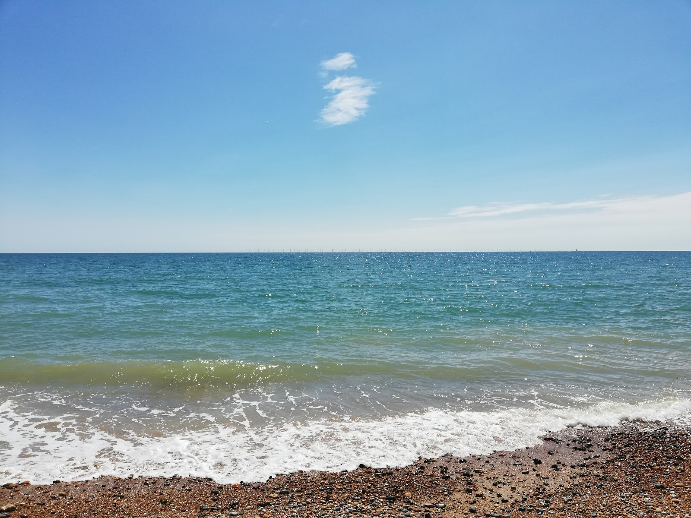
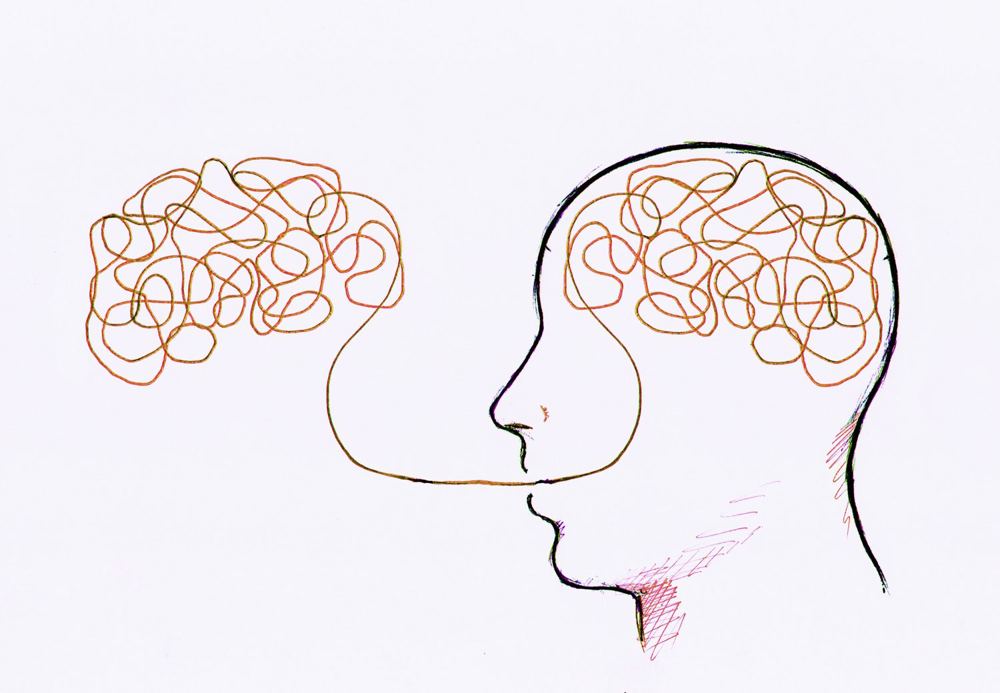

What am I about?
I have just started to grapple with the concepts of web development. I'm hoping to become comfortable with these and move on to explore the wonderful world of NLP, ML and anything else that can unlock the mysteries of human languages. It's going to be a long and challenging journey but I suspect excitement will outweigh frustration
Back to the placesThree things I REALLY like...
-

I love swimming in the sea. Late April to late September that's where I'll be.
-

Cognitive Linguistics encompasses research into language and self across many disciplines. They are unified by the shared beliefs that language is (1) cognitively processed like any other input (2) usage based and so ever changing and (3) that meaning is central.
-
There is nothing like the slowly fading light of a warm summer's evening in the South of England. That magical dying of the day directly transports me to a lost childhood idyll. Those rare perfect evenings are always a particular treat.